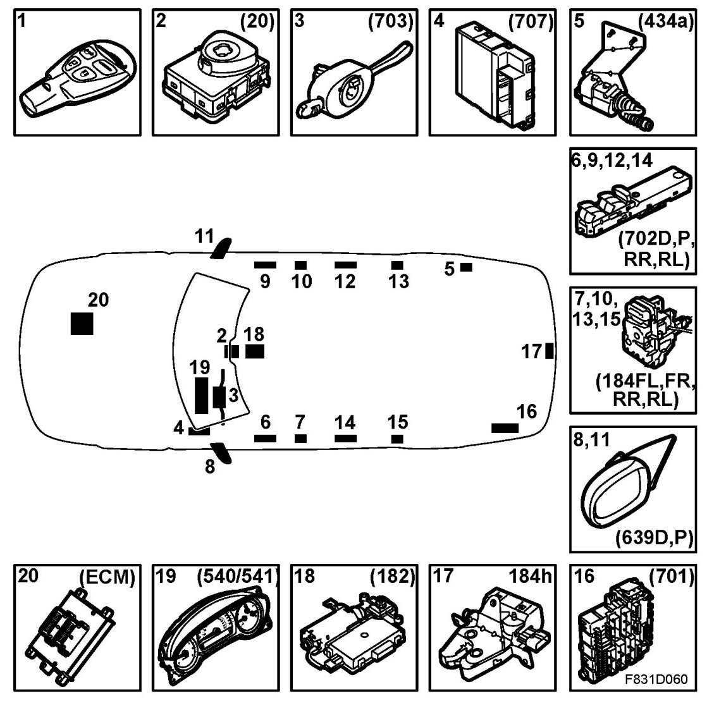

Central Locking System, Main Components
Central Locking System, Main Components
Main components

1. Key
2. Ignition switch module ISM (20)
3. Column Integration Module CIM (703a)
4. Control module, BCM (707)
5. Filler flap lock
6. Driver's door module, DDM (702D)
7. Door lock
8. Electrically adjustable door mirror
9. Passenger door module, PDM (702P)
10. Door lock
11. Electrically adjustable door mirror
12. Rear right door module, RRDM (702RR)
13. Door lock
14. Rear left door module, RLDM (702RL)
15. Door lock
16. REC (701)
17. Bootlid lock
18. Sunroof module, SRM (182)
19. Main instrument unit, MIU (540)/SID (541)
20. ECM